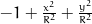
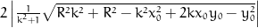
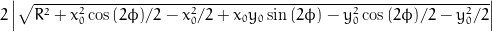

Assumed to be centred at 0, the coordinate system origin.
0=Parametric solution (t). Solutions were derived automatically using sympy.
Points in cartesian coordinates (x, y, z)
x = x0 + (-k*y0 - x0 + sqrt(pow(R, 2)*pow(k, 2) + pow(R, 2) - pow(k, 2)*pow(x0, 2) + 2*k*x0*y0 - pow(y0, 2)))/(pow(k, 2) + 1);
y = k*(-k*y0 - x0 + sqrt(pow(R, 2)*pow(k, 2) + pow(R, 2) - pow(k, 2)*pow(x0, 2) + 2*k*x0*y0 - pow(y0, 2)))/(pow(k, 2) + 1) + y0;
x = x0 - (k*y0 + x0 + sqrt(pow(R, 2)*pow(k, 2) + pow(R, 2) - pow(k, 2)*pow(x0, 2) + 2*k*x0*y0 - pow(y0, 2)))/(pow(k, 2) + 1);
y = -k*(k*y0 + x0 + sqrt(pow(R, 2)*pow(k, 2) + pow(R, 2) - pow(k, 2)*pow(x0, 2) + 2*k*x0*y0 - pow(y0, 2)))/(pow(k, 2) + 1) + y0;
Distance between crossing points.
sol1 = (-k*y0 - x0 + sqrt(pow(R, 2)*pow(k, 2) + pow(R, 2) - pow(k, 2)*pow(x0, 2) + 2*k*x0*y0 - pow(y0, 2)))/(pow(k, 2) + 1);
sol2 = -(k*y0 + x0 + sqrt(pow(R, 2)*pow(k, 2) + pow(R, 2) - pow(k, 2)*pow(x0, 2) + 2*k*x0*y0 - pow(y0, 2)))/(pow(k, 2) + 1);
distance = 2*fabs(sqrt(pow(R, 2)*pow(k, 2) + pow(R, 2) - pow(k, 2)*pow(x0, 2) + 2*k*x0*y0 - pow(y0, 2))/(pow(k, 2) + 1));
Assumed to be centred at 0, the coordinate system origin.
0=Parametric solution (t). Solutions were derived automatically using sympy.
Points in cartesian coordinates (x, y, z)
x = x0 + (-x0*cos(phi) - y0*sin(phi) - sqrt(pow(R, 2) + (1.0L/2.0L)*pow(x0, 2)*cos(2*phi) - 1.0L/2.0L*pow(x0, 2) + x0*y0*sin(2*phi) - 1.0L/2.0L*pow(y0, 2)*cos(2*phi) - 1.0L/2.0L*pow(y0, 2)))*cos(phi);
y = y0 + (-x0*cos(phi) - y0*sin(phi) - sqrt(pow(R, 2) + (1.0L/2.0L)*pow(x0, 2)*cos(2*phi) - 1.0L/2.0L*pow(x0, 2) + x0*y0*sin(2*phi) - 1.0L/2.0L*pow(y0, 2)*cos(2*phi) - 1.0L/2.0L*pow(y0, 2)))*sin(phi);
x = x0 + (-x0*cos(phi) - y0*sin(phi) + sqrt(pow(R, 2) + (1.0L/2.0L)*pow(x0, 2)*cos(2*phi) - 1.0L/2.0L*pow(x0, 2) + x0*y0*sin(2*phi) - 1.0L/2.0L*pow(y0, 2)*cos(2*phi) - 1.0L/2.0L*pow(y0, 2)))*cos(phi);
y = y0 + (-x0*cos(phi) - y0*sin(phi) + sqrt(pow(R, 2) + (1.0L/2.0L)*pow(x0, 2)*cos(2*phi) - 1.0L/2.0L*pow(x0, 2) + x0*y0*sin(2*phi) - 1.0L/2.0L*pow(y0, 2)*cos(2*phi) - 1.0L/2.0L*pow(y0, 2)))*sin(phi);
Distance between crossing points.
sol1 = -x0*cos(phi) - y0*sin(phi) - sqrt(pow(R, 2) + (1.0L/2.0L)*pow(x0, 2)*cos(2*phi) - 1.0L/2.0L*pow(x0, 2) + x0*y0*sin(2*phi) - 1.0L/2.0L*pow(y0, 2)*cos(2*phi) - 1.0L/2.0L*pow(y0, 2));
sol2 = -x0*cos(phi) - y0*sin(phi) + sqrt(pow(R, 2) + (1.0L/2.0L)*pow(x0, 2)*cos(2*phi) - 1.0L/2.0L*pow(x0, 2) + x0*y0*sin(2*phi) - 1.0L/2.0L*pow(y0, 2)*cos(2*phi) - 1.0L/2.0L*pow(y0, 2));
distance = 2*fabs(sqrt(pow(R, 2) + (1.0L/2.0L)*pow(x0, 2)*cos(2*phi) - 1.0L/2.0L*pow(x0, 2) + x0*y0*sin(2*phi) - 1.0L/2.0L*pow(y0, 2)*cos(2*phi) - 1.0L/2.0L*pow(y0, 2)));
By Johannes Buchner | Source code: https://github.com/JohannesBuchner/intersection | Open a issue or pull request if you would like somthing added